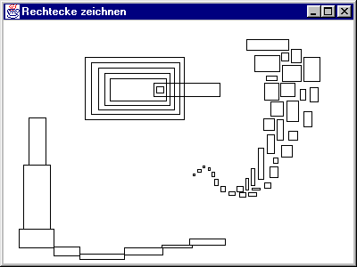

Im JDK gibt es eine klare Trennung zwischen Mouse-Events und
MouseMotion-Events. Während die Mouse-Events für
Mausklicks und das Betreten oder Verlassen der Komponente zuständig
sind, geben MouseMotion-Events Auskunft über die Bewegung
des Mauszeigers. Neben der verbesserten Modularisierung (sehr viele
Programme wollen lediglich von Mausklicks, nicht aber von Mausbewegungen
unterrichtet werden) wurde die Trennung vor allem deshalb vorgenommen,
um Performance-Verbesserungen zu erzielen. Durch die Entkopplung der
Ereignishandler für Mausbewegungen wird die Anzahl der Events,
mit denen die meisten Event-Handler beschossen werden, drastisch reduziert.
Ein Empfänger für MouseMotion-Events muss das Interface
MouseMotionListener
implementieren. Er wird mit der Methode addMouseMotionListener
registriert, die in allen Objekten der Klasse Component
oder daraus abgeleiteten Klassen zur Verfügung steht.
Das Interface MouseMotionListener
definiert die Methoden mouseMoved
und mouseDragged:
mouseMoved
wird aufgerufen, wenn die Maus bewegt wird, ohne dass dabei eine der
Maustasten gedrückt ist. mouseDragged
wird dagegen aufgerufen, wenn die Maus bei gedrückter linker
oder rechter Maustaste bewegt wird.
Das folgende Listing zeigt den Einsatz von mouseDragged
am Beispiel eines Programms, mit dem Rechtecke gezeichnet werden können.
Das Drücken der linken Maustaste legt den Anfangspunkt des Rechtecks
fest und durch Ziehen der Maus wird seine Größe bestimmt.
Nach dem Loslassen der Maustaste wird das Rechteck in die Liste der
gezeichneten Objekte eingetragen und beim nächsten Aufruf von
paint
gezeichnet.
001 /* Listing2904.java */
002
003 import java.awt.*;
004 import java.awt.event.*;
005 import java.util.*;
006
007 public class Listing2904
008 extends Frame
009 {
010 private ArrayList<Rectangle> drawlist;
011 private Rectangle actrect;
012
013 public static void main(String[] args)
014 {
015 Listing2904 wnd = new Listing2904();
016 wnd.setLocation(200,200);
017 wnd.setSize(400,300);
018 wnd.setVisible(true);
019 }
020
021 public Listing2904()
022 {
023 super("Rechtecke zeichnen");
024 drawlist = new ArrayList<Rectangle>();
025 actrect = new Rectangle(0,0,0,0);
026 addWindowListener(new WindowClosingAdapter());
027 addMouseListener(new MyMouseListener());
028 addMouseMotionListener(new MyMouseMotionListener());
029 }
030
031 public void paint(Graphics g)
032 {
033 Rectangle r;
034 Iterator<Rectangle> e;
035
036 for (e = drawlist.iterator(); e.hasNext(); ) {
037 r = e.next();
038 g.drawRect(r.x, r.y, r.width, r.height);
039 }
040 if (actrect.x > 0 || actrect.y > 0) {
041 g.drawRect(
042 actrect.x,
043 actrect.y,
044 actrect.width,
045 actrect.height
046 );
047 }
048 }
049
050 class MyMouseListener
051 extends MouseAdapter
052 {
053 public void mousePressed(MouseEvent event)
054 {
055 actrect = new Rectangle(event.getX(),event.getY(),0,0);
056 }
057
058 public void mouseReleased(MouseEvent event)
059 {
060 if (actrect.width > 0 || actrect.height > 0) {
061 drawlist.add(actrect);
062 }
063 repaint();
064 }
065 }
066
067 class MyMouseMotionListener
068 extends MouseMotionAdapter
069 {
070 public void mouseDragged(MouseEvent event)
071 {
072 int x = event.getX();
073 int y = event.getY();
074 if (x > actrect.x && y > actrect.y) {
075 actrect.width = x - actrect.x;
076 actrect.height = y - actrect.y;
077 }
078 repaint();
079 }
080 }
081
082 class MyWindowListener
083 extends WindowAdapter
084 {
085 public void windowClosing(WindowEvent event)
086 {
087 setVisible(false);
088 dispose();
089 System.exit(0);
090 }
091 }
092 }
|
Listing2904.java |
Listing 29.4: Zeichnen von Rechtecken durch Ziehen der Maus
Eine Beispielsitzung mit dem Programm könnte folgendes Ergebnis
liefern:

Abbildung 29.3: Die Ausgabe des Mausbewegungsprogramms